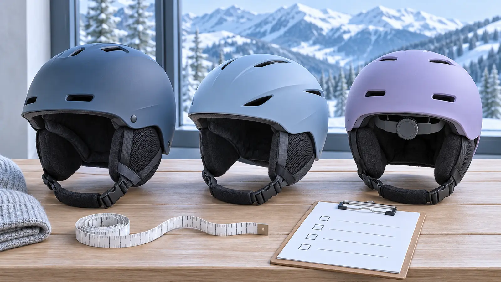

1 · Activity label
Require the current snow-sport certification named by the maker for the exact helmet and market. Read the sewn and molded labels, manufacture date, manual and recall route. “Looks like a ski helmet” fails.
WINTER GEAR · COMMERCIAL · AUTHORITY-EXPANSION
A helmet is not a growth purchase and “multi-sport” is not a certification. Start with the snow-sport label, the child’s current head, the real goggles and a crash-history gate.

Commercial disclosure: this guide includes three Amazon Associate category links added through Mr Adventure Dad’s approved affiliate system. The site may earn from qualifying purchases at no added cost to you. No helmet was hands-on tested; links do not prove certification, child fit, crash history, compatibility, availability, price, rating or warranty.
Do not buy a bigger helmet so it lasts three winters. Do not use a bike helmet because it fits. Do not trust “snow style,” “multi-sport,” a marketplace category or a mountain photo. The CDC says a child’s helmet should be properly fitted, maintained, age appropriate, appropriately certified for the activity, and worn correctly every time. Its ski fact sheet tells families to look for a manufacture date and an ASTM certification label.
ASTM F2040 covers helmets used for nonmotorized recreational snow sports such as skiing and snowboarding. ASTM also says protection is limited. Certification does not replace speed control, instruction, trail choice, the skier responsibility code or leaving when fatigue wins.
A hard-shell model commonly joins a durable outer shell to a separate impact liner. An in-mold model commonly bonds the outer shell to the liner during manufacturing, often producing a lighter, lower-profile form. Hybrids mix methods. Those broad construction descriptions do not predict certification, fit, warmth, ventilation, durability or impact performance for an exact model. Read the maker’s construction and test claims rather than assigning a universal winner.
Hard-shell may fit a family prioritizing exterior durability and a familiar rental-style form, if the exact model passes every gate. In-mold may fit a child sensitive to weight or bulk, if the exact shell shape and goggle interface work. Adjustable-fit systems can fine-tune current fit inside the documented size range; a dial cannot rescue the wrong shell size or shape. Removable ear pads, vents and liners are features only when used exactly as the manual permits.
Hair changes fit. Test the style the child will actually wear, without hard clips, a bun or accessories that the manual prohibits. Recheck at the start of every ski day; growing children and changed liners are not annual-only problems.
Bring the exact goggles. The helmet and goggle should meet as their manufacturers intend without forcing either out of position. Check forehead coverage, top-frame contact, side gaps, strap path, rear retention clip, nose clearance, glasses clearance and full peripheral vision. A fashionable “gap” or a helmet pressing goggles onto the nose fails.
The kids’ ski-goggle guide starts with this same interface. Do not buy both items from separate return windows and hope they negotiate later. If goggles fog or the strap pulls the helmet, diagnose the exact setup with the manufacturers or a qualified ski shop—do not remove safety parts.
The CDC ski fact sheet says a ski helmet must be replaced after a serious crash or when damaged. Manufacturers may set additional limits by impact, age, condition or years from manufacture. Follow the exact model’s instructions. Retire a helmet with cracks, compressed liner, dents, deep gouges, loose shell, damaged buckle, missing pad, failing adjustment, chemical or heat exposure beyond instructions, or an unreadable identity label.
A used helmet saves money only if you can prove certification, model, manufacture date, complete parts, storage and impact history—and the maker still permits use. Most private-sale answers cannot prove an invisible history. Rental helmets can be sensible for a first day when the shop sizes, maintains and tracks them; inspect the helmet and ask for help. Check current CPSC recalls by product identity before buying or continuing use.
The three paid links below are category searches, not rankings. Use them to find current maker documentation, then verify the exact snow-sport certification, size chart, shell construction, permitted accessories, goggle compatibility, manufacture date, replacement rule, recall status, warranty and clean return policy. Marketplace words and reviews do not replace labels.
Prices and availability change, so this guide makes no price claim. For a first ski day, compare a reputable rental package with buying. A rental shop can offer current sizing and avoid guessing whether the child likes the activity. If buying, keep every label and package until the helmet passes the full clean indoor fit with the real goggles.
Pair the helmet with the first ski-day plan: book instruction, use terrain matched to ability, take warm breaks and leave before cold and fatigue wreck judgment. Use the winter-hat guide only outside the helmet decision; the helmet manual controls what, if anything, may be worn beneath it.
Dry the helmet only as the maker instructs. Do not put it on a radiator, in a hot vehicle, beside a heater or under a hair dryer unless the exact manual permits that method. Use approved cleaners; solvents, adhesives, paint and unofficial mounts can damage materials or violate instructions. Store it away from heat, chemicals, crushing loads and loose cargo.
Cold, wind, ice and visibility still decide whether to ski. A helmet does not change a closed trail, poor control, a wrong lesson level or a family weather cutoff. If anyone takes a serious hit, stop the activity, follow resort emergency procedures and seek medical evaluation as appropriate. Do not return to play because the shell looks fine.
Rent or wait when the child’s activity is uncertain, the real goggles are unavailable, no size gives a stable pain-free fit, the seller cannot show the exact certification and manual, the helmet’s history is unknown, or the family is trying to solve warmth with a larger shell. Ask a qualified ski shop or the manufacturer; this is not a product category to settle with “probably.”
Reviewed November 5, 2026 using CDC HEADS UP helmet safety guidance and its ski helmet fact sheet, CPSC’s winter sport safety reminder and recall database, and ASTM’s official F2040 snow-sport helmet scope. Construction tradeoffs, the four-part card and fit sequence are independent editorial tools, not certification, crash testing, medical advice or a substitute for the exact manual or qualified fitting.
MAKE THE WEEK COUNT
Build the plan your family can finish well, then leave enough energy for the next part of the day.
More family plansTHE USEFUL STUFF
These are practical categories to compare—not a reason to overpack. Check fit, specifications and current reviews before buying.
Paid links: As an Amazon Associate I earn from qualifying purchases. You pay no additional cost.
Require the exact snow-sport certification label, manufacture date, current head measurement, complete manual, known history and clean return terms. Construction does not prove fit or performance.
See current options → COMPARE ON AMAZONCompare the exact certification, shell shape, size chart, retention system, goggle interface, permitted layers, replacement rule and current recall status.
See current options → COMPARE ON AMAZONA dial can fine-tune only a correctly sized shell. Verify the snow-sport label, stable pain-free fit, real goggles, unmodified parts and known crash history.
See current options →